unix-api
POSIX process management
essential operations
process information:
getpidprocess creation:
forkrunning programs:
exec*waiting for processes to finish:
waitpid(orwait)process destruction, ‘signaling’:
exit,kill
againframe(posixProcessFunctions)
fork
pid_t fork()— copy the current processreturns twice:
- in parent (original process): pid of new child process
- in child (new process):
0
everything (but pid) duplicated in parent, child:
- memory
- file descriptors (later)
- registers
fork and process info (w/o copy-on-write)
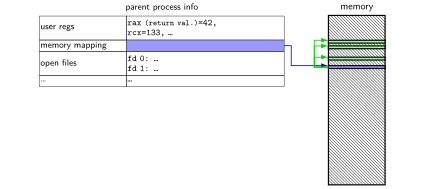
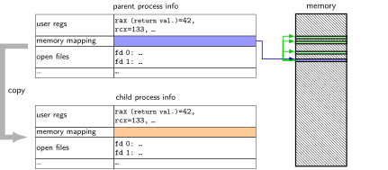

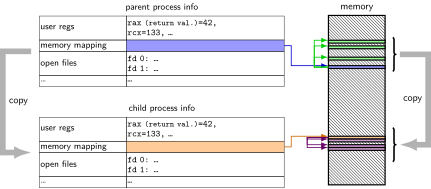
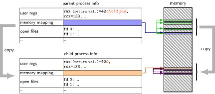
fork example
// not shown: #include various headers
int main(int argc, char *argv[]) {
pid_t pid = getpid();
printf("Parent pid: %d\n", (int) pid);
pid_t child_pid = fork();
if (child_pid > 0) {
/* Parent Process */
pid_t my_pid = getpid();
printf("[%d] parent of [%d]\n",
(int) my_pid,
(int) child_pid);
} else if (child_pid == 0) {
/* Child Process */
pid_t my_pid = getpid();
printf("[%d] child\n",
(int) my_pid);
} else {
perror("Fork failed");
}
return 0;
}
getpid — returns current process ID
casts on printf because pid_t might not be int
perror("Fork failed") prints out Fork failed: error message
example error message: “Resource temporarily unavailable”
Example output:
Parent pid: 100
[100] parent of [432]
[432] child
a fork question
int main() {
pid_t pid = fork();
if (pid == 0) {
printf("In child\n");
} else {
printf("Child %d\n", pid);
}
printf("Done!\n");
}
Exercise: Suppose the pid of the parent process is 99 and child is 100. Give two possible outputs. (Assume no crashes, etc.)
a fork question
int main() {
pid_t pid = fork();
if (pid == 0) {
printf("In child\n");
} else {
printf("Child %d\n", pid);
}
printf("Done!\n");
}
Exercise: Suppose the pid of the parent process is 99 and child is 100. Give two possible outputs. (Assume no crashes, etc.)
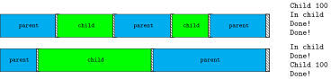
a fork question (2)
int x = 0;
int main() {
pid_t pid = fork();
int y = 0;
if (pid == 0) {
x += 1;
y += 2;
} else {
x += 3;
y += 4;
}
printf("%d %d\n", x, y);
}| A. 1 2 (newline) 3 4 | B. 1 2 (newline) 4 4 | C. 1 2 (newline) 4 6 |
| D. 3 4 (newline) 1 2 | E. 3 4 (newline) 4 6 | F. 4 6 (newline) 4 6 |
againframe(posixProcessFunctions)
exec*
exec* — replace current program with new program
- — multiple variants
- same pid, new process image
int execv(const char *path, const char **argv)- path: new program to run
- argv: array of arguments, termianted by null pointer
also other variants that take argv in different form and/or environment variables*
- *environment variables = list of key-value pairs
execv example
...
child_pid = fork();
if (child_pid == 0) {
/* child process */
char *args\[] = {"ls", "-l", NULL};
execv("/bin/ls", args);
/* execv doesn't return when it works.
So, if we got here, it failed. */
perror("execv");
exit(1);
} else if (child_pid > 0) {
/* parent process */
...
}

exec in the kernel
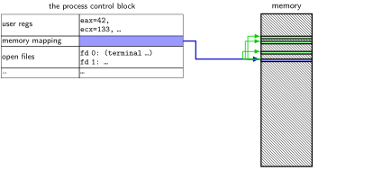
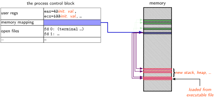
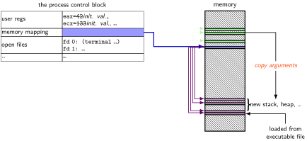
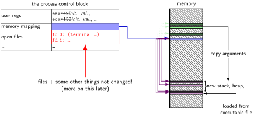
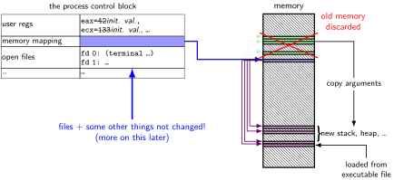
why fork/exec?
could just have a function to spawn a new program
- Windows
CreateProcess(); POSIX’s (rarely used)posix_spawn
- Windows
some other OSs do this (e.g. Windows)
needs to include API to set new program’s state
- e.g. without fork: either:
need function to set new program’s current directory, or
need to change your directory, then start program, then change back - e.g. with fork: just change your current directory before exec
- e.g. without fork: either:
but allows OS to avoid ‘copy everything’ code
- probably makes OS implementation easier
posix_spawn
pid_t new_pid;
const char argv[] = { "ls", "-l", NULL };
int error_code = posix_spawn(
&new_pid,
"/bin/ls",
NULL /* null = copy current process's open files;
if not null, do something else */,
NULL /* null = no special settings for new process */,
argv,
NULL /* null = copy current "environment variables",
if not null, do something else */
);
if (error_code == 0) {
/* handle error */
}
some opinions (via HotOS ’19)
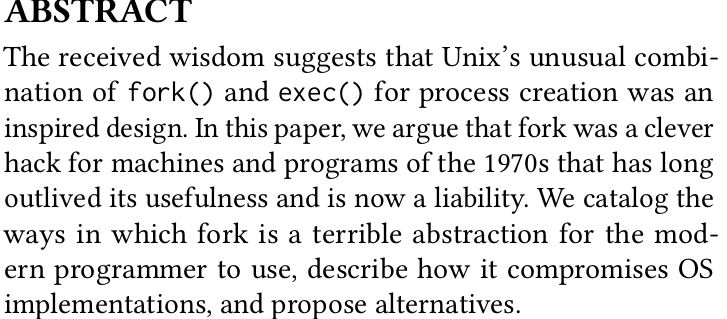
againframe(posixProcessFunctions)
wait/waitpid
pid_t waitpid(pid_t pid, int *status,
int options)wait for a child process (with pid=
pid) to finishsets
*statusto its ‘‘status information’’pid=-1\(\\rightarrow{}\) wait for any child process insteadpid=0almost the same
options? see manual page (command
man waitpid)0— no options
waitpid example
#include <sys/wait.h>
...
child_pid = fork();
if (child_pid > 0) {
/* Parent process */
int status;
waitpid(child_pid, &status, 0);
} else if (child_pid == 0) {
/* Child process */
...
exit statuses
int main() {
return 0; /* or exit(0); */
}
the status
#include <sys/wait.h>
...
waitpid(child_pid, &status, 0);
if (WIFEXITED(status)) {
printf("main returned or exit called with %d\\n",
WEXITSTATUS(status));
} else if (WIFSIGNALED(status)) {
printf("killed by signal %d\\n", WTERMSIG(status));
} else {
...
}
‘‘status code’’ encodes both return value and if exit was abnormal
W* macros to decode it
typical pattern
typical pattern (alt)
typical pattern (detail)
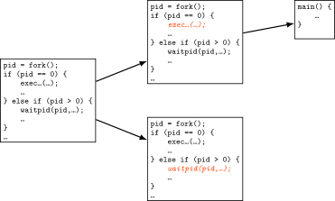
againframe(posixProcessFunctions)
exercise (1)
int main() {
pid_t pids[2]; const char *args[] = {"echo", "ARG", NULL};
const char *extra[] = {"L1", "L2"};
for (int i = 0; i < 2; ++i) {
pids[i] = fork();
if (pids[i] == 0) {
args[1] = extra[i];
execv("/bin/echo", args);
}
}
for (int i = 0; i < 2; ++i) {
waitpid(pids[i], NULL, 0);
}
}
| A. |
|
D. | A and B |
| B. |
|
E. | A and C |
| C. |
|
F. | all of the above |
| G. | something else |
exercise (2)
int main() {
pid_t pids[2]; const char *args[] = {"echo", "0", NULL};
for (int i = 0; i < 2; ++i) {
pids[i] = fork();
if (pids[i] == 0) { execv("/bin/echo", args); }
}
printf("1\n"); fflush(stdout);
for (int i = 0; i < 2; ++i) {
waitpid(pids[i], NULL, 0);
}
printf("2\n"); fflush(stdout);
}
| A. |
|
E. | A, B, and C |
| B. |
|
F. | C and D |
| C. |
|
G. | all of the above |
| D. |
|
H. | something else |
warning re: forking in loops
while (true) {
fork();
}
what’s going to happen?
- lots of CPU being used
- lots of memory being allocated
- control-C might only terminate one of the processes
probably very bad and hard to recover from
some recommendations re: timing
- in timing assignment, you’ll need to run
fork()multiple times to measure it - I recommend:
- always waitpid successfully before fork()ing a second time
- test fork()ing exactly once before doing a loop
some POSIX command-line features
- searching for programs
ls -l→/bin/ls -lmake→/usr/bin/make
- running in background
./someprogram &
- redirection:
./someprogram >output.txt./someprogram <input.txt
- pipelines:
./someprogram | ./somefilter
file descriptors
struct process_info { /* <-- in the kernel somewhere */
...
struct open_file_description *files[SIZE];
...
};
...
process->files[file_descriptor]- Unix: every process has
array (or similar) of open file descriptions - ‘‘open file’’: terminal · socket · regular file · pipe
- file descriptor = index into array
- usually what’s used with system calls
- stdio.h FILE*s usually have file descriptor + buffer
special file descriptors
file descriptor 0 = standard input
file descriptor 1 = standard output
file descriptor 2 = standard error
constants in
unistd.hSTDIN_FILENO,STDOUT_FILENO,STDERR_FILENO
but you can’t choose which number
openassigns…?
getting file descriptors
int read_fd = open("dir/file1", O_RDONLY);
int write_fd = open("/other/file2", O_WRONLY | ...);
int rdwr_fd = open("file3", O_RDWR);
- used internally by fopen(), etc.
- also for files without normal filenames…:
int fd = shm_open("/shared_memory", O_RDWR, 0666); // shared memory
int socket_fd = socket(AF_INET, SOCK_STREAM, 0); // TCP socket
int term_fd = posix_openpt(O_RDWR); // pseudo-terminal
int pipe_fds[2]; pipe(pipefds); // "pipes" (implements ./command | ./other_cmd)
...
open: flags
int open(const char *path, int flags);
int open(const char *path, int flags, int mode);
- flags: bitwise or of:
O_RDWR,O_RDONLY, orO_WRONLY- read/write, read-only, write-only
O_APPEND- append to end of file
O_TRUNC- truncate (set length to 0) file if it already exists
O_CREAT- create a new file if one doesn’t exist
- (default: file must already exist)
- … and more
man 2 open
open: mode
int open(const char *path, int flags);
int open(const char *path, int flags, int mode);
mode: permissions of newly created file
- like numbers provided to
chmodcommand - filtered by a ‘‘umask’’
- like numbers provided to
simple advice: always use
0666- = readable/writeable by everyone, except where umask prohibits
- (typical umask: prohibit other/group writing)
close
int close(int fd);
close the file descriptor, deallocating that array index
- does not affect other file descriptors
that refer to same ‘‘open file description’’ - (e.g. in
fork()ed child or created via (later)dup2)
- does not affect other file descriptors
if last file descriptor for open file description, resources deallocated
returns 0 on success
returns -1 on error
- e.g. ran out of disk space while finishing saving file
shell redirection
./my_program ... < input.txt:- run
./my_program ...but useinput.txtas input - like we copied and pasted the file into the terminal
- run
echo foo > output.txt:- runs
echo foo, sends output tooutput.txt - like we copied and pasted the output into that file
- (as it was written)
- runs
fork copies file pointer list
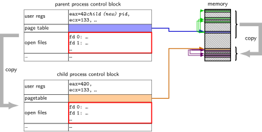
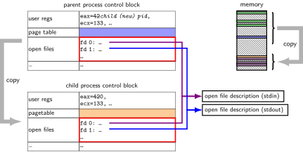
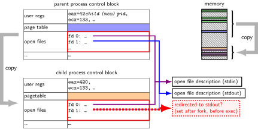
typical pattern with redirection
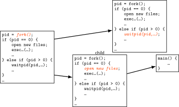
redirecting with exec
standard output/error/input are files
- (C stdout/stderr/stdin; C++ cout/cerr/cin)
(probably after forking) open files to redirect
… and make them be standard output/error/input
- using
dup2()library call
- using
then exec, preserving new standard output/etc.
exec preserves open files
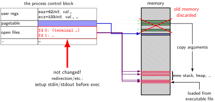
reassigning file descriptors
redirection:
./program >output.txtstep 1: open output.txt for writing, get new file descriptor
step 2: make that new file descriptor stdout (number 1)
tool:
int dup2(int oldfd, int newfd)
makenewfdrefer to same open file asoldfd- same open file description
- shares the current location in the file
- (even after more reads/writes)
what if newfd already allocated — closed, then reused
reassigning and file table
// something like this in OS code
struct process_info {
...
struct open_file_description *files[SIZE];
....
};
...
process->files[STDOUT_FILENO] = process->files[opened-fd];
- syscall:
dup2(opened-fd, STDOUT_FILENO);
dup2 example
redirects stdout to output to output.txt:
fflush(stdout); /* clear printf's buffer */
int fd = open("output.txt",
O_WRONLY | O_CREAT | O_TRUNC);
if (fd < 0)
do_something_about_error();
dup2(fd, STDOUT_FILENO);
/* now both write(fd, ...) and write(STDOUT_FILENO, ...)
write to output.txt
*/
close(fd); /* only close original, copy still works! */
printf("This will be sent to output.txt.\n");
open/dup/close/etc. and fd array
// something like this in OS code
struct process_info {
...
struct open_file_description *files[NUM];
};
- open:
files[new_fd] = ...; - dup2(from, to):
files[to] = files[from]; - close:
files[fd] = NULL; - fork:
for (int i = ...)
child->files[i] = parent->files[i];
- (plus extra work to avoid leaking memory)
dup2 exercise
- recall:
dup2(old_fd, new_fd)
int fd = open("output.txt", O_WRONLY | O_CREAT, 0666);
write(STDOUT_FILENO, "A", 1);
dup2(fd, STDOUT_FILENO);
pid_t pid = fork();
if (pid == 0) { /* child: */
dup2(STDOUT_FILENO, fd); write(fd, "B", 1);
} else {
write(STDOUT_FILENO, "C", 1);
}
| A. stdout: ABC ; output.txt: empty | D. stdout: A ; output.txt: BC |
| B. stdout: AC ; output.txt: B | E. more? |
| C. stdout: A ; output.txt: CB |
unshared seek pointers
if ‘‘foo.txt’’ contains ‘‘AB’’
int fd1 = open("foo.txt", O_RDONLY);
int fd2 = open("foo.txt", O_RDONLY);
char c;
read(fd1, &c, 1);
char d;
read(fd2, &d, 1);
expected result: c = ‘A’, d = ‘A’
shared seek pointers (1)
if ‘‘foo.txt’’ contains ‘‘AB’’:
int fd = open("foo.txt", O_RDONLY);
dup2(fd, 100);
char c;
read(fd, &c, 1);
char d;
read(100, &d, 1);
expected result: c = ‘A’, d = ‘B’
shared seek pointers (2)
if ‘‘foo.txt’’ contains ‘‘AB’’:
int fd = open("foo.txt", O_RDONLY);
pid_t p = fork();
if (p == 0) {
char c;
read(fd, &c, 1);
...
} else {
char d;
sleep(1);
read(fd, &d, 1);
...
}
expected result: c = ‘A’, d = ‘B’
exercise
int fd = open("output.txt", O_WRONLY|O_CREAT|O_TRUNC, 0666);
write(fd, "A", 1);
dup2(STDOUT_FILENO, 100);
dup2(fd, STDOUT_FILENO);
write(STDOUT_FILENO, "B", 1);
write(fd, "C", 1);
close(fd);
write(STDOUT_FILENO, "D", 1);
write(100, "E", 1);
open() and dup2() do not fail, write() does not fail as long as the fd it writes to is open, fd 100 was closed and is not what open returns, and STDOUT_FILENO is initially open. What is written to output.txt? | A. | ABCDE | C. | ABC | E. something else |
| B. | ABCD | D. | ACD |
Unix API summary
spawn and wait for program:
fork(copy), then- in child: setup, then
execv, etc. (replace copy) - in parent:
waitpid
- in child: setup, then
files: open, read and/or write, close
- one interface for regular files, pipes, network, devices, …
file descriptors are indices into per-process array
- index 0, 1, 2 = stdin, stdout, stderr
dup2— assign one index to anotherclose— deallocate index
redirection
- open() to create new file descriptors
- dup2 in child to assign file descriptor to index 0, 1
Backup slides
shell
- allow user (= person at keyboard) to run applications
- user’s wrapper around process-management functions
aside: shell forms
POSIX: command line you have used before
also: graphical shells
- e.g. OS X Finder, Windows explorer
other types of command lines?
completely different interfaces?
searching for programs
POSIX convention: PATH environment variable
- example:
/home/cr4bd/bin:/usr/bin:/bin - list of directories to check in order
- example:
environment variables = key/value pairs stored with process
- by default, left unchanged on execve, fork, etc.
one way to implement: [pseudocode]
for (directory in path) {
execv(directory + "/" + program_name, argv);
}
kernel buffering (reads)
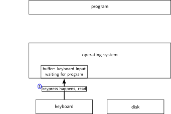
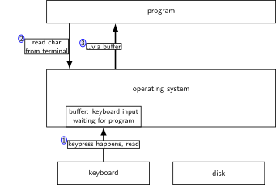
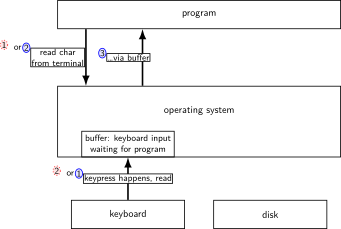
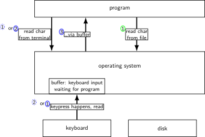
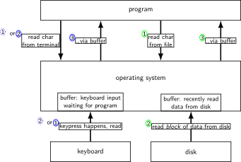
kernel buffering (writes)
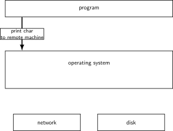
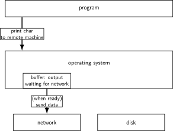
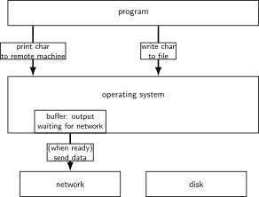
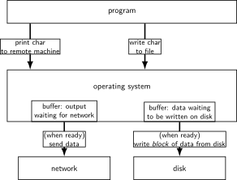
read/write operations
read()/write(): move data into/out of buffer
possibly wait if buffer is empty (read)/full (write)
actual I/O operations — wait for device to be ready
- trigger process to stop waiting if needed
layering
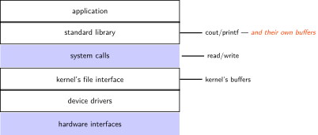
why the extra layer
better (but more complex to implement) interface:
- read line
- formatted input (scanf, cin into integer, etc.)
- formatted output
less system calls (bigger reads/writes) sometimes faster
- buffering can combine multiple in/out library calls into one system call
more portable interface
- cin, printf, etc. defined by C and C++ standards
pipe() and blocking
BROKEN example:
int pipe_fd[2];
if (pipe(pipe_fd) < 0)
handle_error();
int read_fd = pipe_fd[0];
int write_fd = pipe_fd[1];
write(write_fd, some_buffer, some_big_size);
read(read_fd, some_buffer, some_big_size);
This is likely to not terminate. What’s the problem?
pattern with multiple?
this class: focus on Unix
- Unix-like OSes will be our focus
- we have source code
- used to from 2150, etc.?
- have been around for a while
- xv6 imitates Unix
Unix history
POSIX: standardized Unix
Portable Operating System Interface (POSIX)
- ‘‘standard for Unix’’
current version online: https://pubs.opengroup.org/onlinepubs/9699919799/
(almost) followed by most current Unix-like OSes
… but OSes add extra features
… and POSIX doesn’t specify everything
what POSIX defines
POSIX specifies the library and shell interface
- source code compatibility
doesn’t care what is/is not a system call…
doesn’t specify binary formats…
idea: write applications for POSIX, recompile and run on all implementations
- this was a very important goal in the 80s/90s
- at the time, no dominant Unix-like OS (Linux was very immature)
getpid
pid_t my_pid = getpid();
printf("my pid is %ld\n", (long) my_pid);
process ids in ps
cr4bd@machine:~$ ps
PID TTY TIME CMD
14777 pts/3 00:00:00 bash
14798 pts/3 00:00:00 ps
read/write
ssize_t read(int fd, void *buffer, size_t count);
ssize_t write(int fd, void *buffer, size_t count);
read/write up to count bytes to/from buffer
returns number of bytes read/written or -1 on error
- ssize_t is a signed integer type
- error code in
errno
read returning 0 means end-of-file (not an error)
- can read/write less than requested (end of file, broken I/O device, …)
againframe(readWrite)
read’ing one byte at a time
string s;
ssize_t amount_read;
char c;
/* cast to void * not needed in C */
while ((amount_read = read(STDIN_FILENO, (void*) &c, 1)) > 0) {
/* amount_read must be exactly 1 */
s += c;
}
if (amount_read == -1) {
/* some error happened */
perror("read"); /* print out a message about it */
} else if (amount_read == 0) {
/* reached end of file */
}
write example
/* cast to void * optional in C */
write(STDOUT_FILENO, (void *) "Hello, World!\n", 14);
aside: environment variables (1)
- key=value pairs associated with every process:
$ printenv
MODULE_VERSION_STACK=3.2.10
MANPATH=:/opt/puppetlabs/puppet/share/man
XDG_SESSION_ID=754
HOSTNAME=labsrv01
SELINUX_ROLE_REQUESTED=
TERM=screen
SHELL=/bin/bash
HISTSIZE=1000
SSH_CLIENT=128.143.67.91 58432 22
SELINUX_USE_CURRENT_RANGE=
QTDIR=/usr/lib64/qt-3.3
OLDPWD=/zf14/cr4bd
QTINC=/usr/lib64/qt-3.3/include
SSH_TTY=/dev/pts/0
QT_GRAPHICSSYSTEM_CHECKED=1
USER=cr4bd
LS_COLORS=rs=0:di=01;34:ln=01;36:mh=00:pi=40;33:so=01;35:do=01;35:bd=40;33;01:cd=40;33;01:or=40;31;01:mi=01;05;37;41:su=37;41:sg=30;43:ca=30;41:tw=30;42:ow=34;42:st=37;44:ex=01;32:*.tar=01;31:*.tgz=01;31:*.arc=01;31:*.arj=01;31:*.taz=01;31:*.lha=01;31:*.lz4=01;31:*.lzh=01;31:*.lzma=01;31:*.tlz=01;31:*.txz=01;31:*.tzo=01;31:*.t7z=01;31:*.zip=01;31:*.z=01;31:*.Z=01;31:*.dz=01;31:*.gz=01;31:*.lrz=01;31:*.lz=01;31:*.lzo=01;31:*.xz=01;31:*.bz2=01;31:*.bz=01;31:*.tbz=01;31:*.tbz2=01;31:*.tz=01;31:*.deb=01;31:*.rpm=01;31:*.jar=01;31:*.war=01;31:*.ear=01;31:*.sar=01;31:*.rar=01;31:*.alz=01;31:*.ace=01;31:*.zoo=01;31:*.cpio=01;31:*.7z=01;31:*.rz=01;31:*.cab=01;31:*.jpg=01;35:*.jpeg=01;35:*.gif=01;35:*.bmp=01;35:*.pbm=01;35:*.pgm=01;35:*.ppm=01;35:*.tga=01;35:*.xbm=01;35:*.xpm=01;35:*.tif=01;35:*.tiff=01;35:*.png=01;35:*.svg=01;35:*.svgz=01;35:*.mng=01;35:*.pcx=01;35:*.mov=01;35:*.mpg=01;35:*.mpeg=01;35:*.m2v=01;35:*.mkv=01;35:*.webm=01;35:*.ogm=01;35:*.mp4=01;35:*.m4v=01;35:*.mp4v=01;35:*.vob=01;35:*.qt=01;35:*.nuv=01;35:*.wmv=01;35:*.asf=01;35:*.rm=01;35:*.rmvb=01;35:*.flc=01;35:*.avi=01;35:*.fli=01;35:*.flv=01;35:*.gl=01;35:*.dl=01;35:*.xcf=01;35:*.xwd=01;35:*.yuv=01;35:*.cgm=01;35:*.emf=01;35:*.axv=01;35:*.anx=01;35:*.ogv=01;35:*.ogx=01;35:*.aac=01;36:*.au=01;36:*.flac=01;36:*.mid=01;36:*.midi=01;36:*.mka=01;36:*.mp3=01;36:*.mpc=01;36:*.ogg=01;36:*.ra=01;36:*.wav=01;36:*.axa=01;36:*.oga=01;36:*.spx=01;36:*.xspf=01;36:
MODULE_VERSION=3.2.10
MAIL=/var/spool/mail/cr4bd
PATH=/zf14/cr4bd/.cargo/bin:/zf14/cr4bd/bin:/usr/lib64/qt-3.3/bin:/usr/local/bin:/usr/bin:/usr/local/sbin:/usr/sbin:/opt/puppetlabs/bin:/usr/cs/contrib/bin:.
PWD=/zf14/cr4bd
LANG=en_US.UTF-8
MODULEPATH=/sw/centos/Modules/modulefiles:/sw/linux-any/Modules/modulefiles
LOADEDMODULES=
KDEDIRS=/usr
\ldots
_=/usr/bin/printenv
aside: environment variables (2)
environment variable library functions:
getenv(“KEY”)\(\\rightarrow{}\) valueputenv(“KEY=value”)(sets KEY to value)setenv(“KEY”, “value”)(sets KEY to value)
char *envp[] = { "KEY1=value1", "KEY2=value2", NULL };
char *argv[] = { "somecommand", "some arg", NULL };
execve("/path/to/somecommand", argv, envp);
- normal exec versions — keep same environment variables
aside: environment variables (3)
interpretation up to programs, but common ones…
PATH=/bin:/usr/bin- to run a program ‘foo’, look for an executable in
/bin/foo, then/usr/bin/foo
- to run a program ‘foo’, look for an executable in
HOME=/zf14/cr4bd- current user’s home directory is ‘/zf14/cr4bd’
TERM=screen-256color- your output goes to a ‘screen-256color’-style terminal
…
multiple processes?
while (...) {
pid = fork();
if (pid == 0) {
exec ...
} else if (pid > 0) {
pids.push_back(pid);
}
}
/* retrieve exit statuses in order */
for (pid_t pid : pids) {
waitpid(pid, ...);
...
}
waiting for all children
#include <sys/wait.h>
...
while (true) {
pid_t child_pid = waitpid(-1, &status, 0);
if (child_pid == (pid_t) -1) {
if (errno == ECHILD) {
/* no child process to wait for */
break;
} else {
/* some other error */
}
}
/* handle child_pid exiting */
}
multiple processes?
while (...) {
pid = fork();
if (pid == 0) {
exec ...
} else if (pid > 0) {
pids.push_back(pid);
}
}
/* retrieve exit statuses as processes finish */
while ((pid = waitpid(-1, ...)) != -1) {
handleProcessFinishing(pid);
}
‘waiting’ without waiting
#include <sys/wait.h>
...
pid_t return_value = waitpid(child_pid, &status, WNOHANG);
if (return_value == (pid_t) 0) {
/* child process not done yet */
} else if (child_pid == (pid_t) -1) {
/* error */
} else {
/* handle child_pid exiting */
}
parent and child processes
- every process (but process id 1) has a parent process (
getppid()) - this is the process that can wait for it
- creates tree of processes (Linux
pstreecommand):
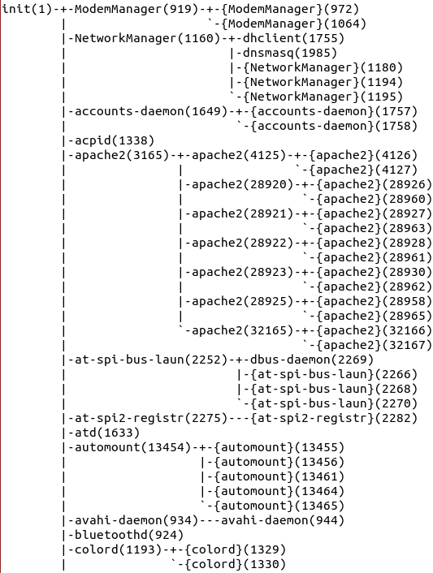
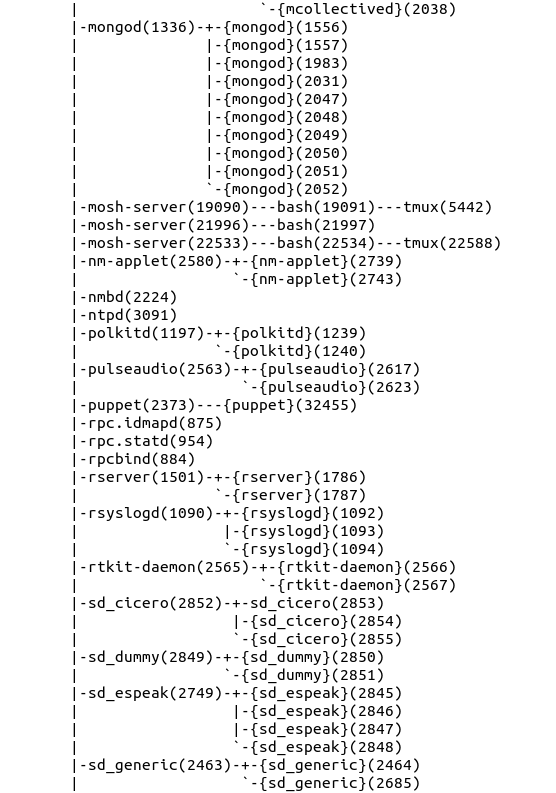
parent and child questions
what if parent process exits before child?
- child’s parent process becomes process id 1 (typically called init)
what if parent process never
waitpid()s (or equivalent) for child?- child process stays around as a ‘‘zombie’’
- can’t reuse pid in case parent wants to use
waitpid()
what if non-parent tries to
waitpid()for child?- waitpid fails
read’ing a fixed amount
ssize_t offset = 0;
const ssize_t amount_to_read = 1024;
char result[amount_to_read];
do {
/* cast to void * optional in C */
ssize_t amount_read =
read(STDIN_FILENO,
(void *) (result + offset),
amount_to_read - offset);
if (amount_read < 0) {
perror("read"); /* print error message */
... /* abort??? */
} else {
offset += amount_read;
}
} while (offset != amount_to_read && amount_read != 0);
partial reads
on regular file: read reads what you request
but otherwise: usually gives you what’s known to be available
- after waiting for something to be available
- reading from network — what’s been received
- reading from keyboard — what’s been typed
write example (with error checking)
const char *ptr = "Hello, World!\n";
ssize_t remaining = 14;
while (remaining > 0) {
/* cast to void * optional in C */
ssize_t amount_written = write(STDOUT_FILENO,
ptr,
remaining);
if (amount_written < 0) {
perror("write"); /* print error message */
... /* abort??? */
} else {
remaining -= amount_written;
ptr += amount_written;
}
}
partial writes
usually only happen on error or interruption
- but can request ‘‘non-blocking’’
- (interruption: via signal)
usually: write waits until it completes
- = until remaining part fits in buffer in kernel
- does not mean data was sent on network, shown to user yet, etc.
kernel buffering (reads)
kernel buffering (writes)
read/write operations
read()/write(): move data into/out of buffer
possibly wait if buffer is empty (read)/full (write)
actual I/O operations — wait for device to be ready
- trigger process to stop waiting if needed
POSIX: everything is a file
the file: one interface for
- devices (terminals, printers, …)
- regular files on disk
- networking (sockets)
- local interprocess communication (pipes, sockets)
- basic operations: open(), read(), write(), close()
againframe(commandLineFeatures)
exercise
int pipe_fds[2]; pipe(pipe_fds);
pid_t p = fork();
if (p == 0) {
close(pipe_fds[0]);
for (int i = 0; i < 10; ++i) {
char c = '0' + i;
write(pipe_fds[1], &c, 1);
}
exit(0);
}
close(pipe_fds[1]);
char buffer[10];
ssize_t count = read(pipe_fds[0], buffer, 10);
for (int i = 0; i < count; ++i) {
printf("%c", buffer[i]);
}
A. 0123456789
|
B. 0
|
C. (nothing) |
| D. A and B | E. A and C | F. A, B, and C |
againframe(pipeExtraEx2)
empirical evidence
8 0
374 01
210 012
30 0123
12 01234
3 012345
1 0123456
2 01234567
1 012345678
359 0123456789
againframe(pipeExtraEx2More)
partial reads
read returning 0 always means end-of-file
- by default, read always waits if no input available yet
- but can set read to return error instead of waiting
read can return less than requested if not available
- e.g. child hasn’t gotten far enough
pipe: closing?
if all write ends of pipe are closed
- can get end-of-file (read() returning 0) on read end
- exit()ing closes them
\(\\rightarrow{}\) close write end when not using
generally: limited number of file descriptors per process
\(\\rightarrow{}\) good habit to close file descriptors not being used
(but probably didn’t matter for read end of pipes in example)
do we really need a complete copy?


trick for extra sharing
sharing writeable data is fine — until either process modifies it
- example: default value of global variables
- might typically not change
- (or OS might have preloaded executable’s data anyways)
can we detect modifications?
trick: tell CPU (via page table) shared part is read-only
processor will trigger a fault when it’s written
copy-on-write and page tables
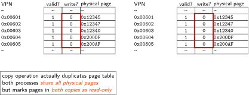
fork (w/ copy-on-write, if parent writes first)
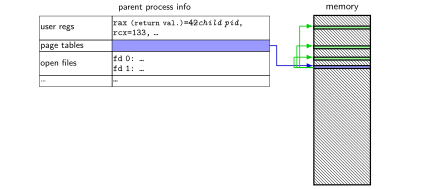
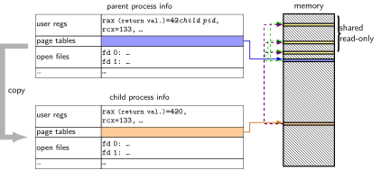
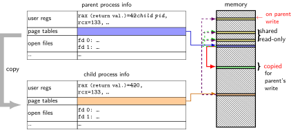
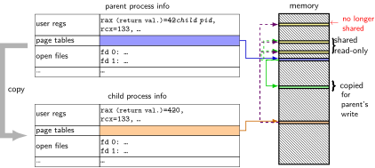
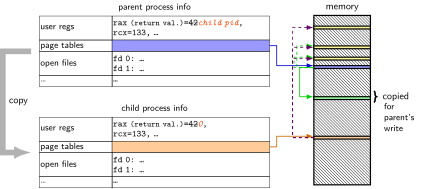
pipes
special kind of file: pipes
bytes go in one end, come out the other — once
created with
pipe()library callintended use: communicate between processes
- like implementing shell pipelines
pipe()
int pipe_fd[2];
if (pipe(pipe_fd) < 0)
handle_error();
/* normal case: */
int read_fd = pipe_fd[0];
int write_fd = pipe_fd[1];
then from one process…
write(write_fd, ...);
and from another
read(read_fd, ...);
pipe example (1)
int pipe_fd\[2];
if (pipe(pipe_fd) < 0)
handle_error(); /* e.g. out of file descriptors */
int read_fd = pipe_fd\[0];
int write_fd = pipe_fd\[1];
child_pid = fork();
if (child_pid == 0) {
/* in child process, write to pipe */
close(read_fd);
write_to_pipe(write_fd); /* function not shown */
exit(EXIT_SUCCESS);
} else if (child_pid > 0) {
/* in parent process, read from pipe */
close(write_fd);
read_from_pipe(read_fd); /* function not shown */
waitpid(child_pid, NULL, 0);
close(read_fd);
} else { /* fork error */ }
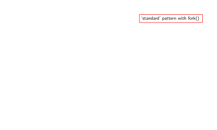
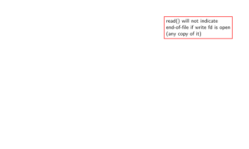
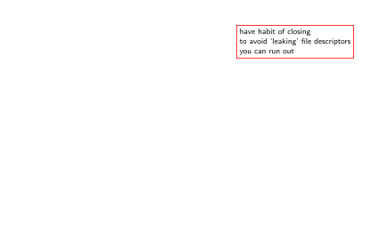
pipe and pipelines
ls -1 | grep foo
pipe(pipe_fd);
ls_pid = fork();
if (ls_pid == 0) {
dup2(pipe_fd[1], STDOUT_FILENO);
close(pipe_fd[0]); close(pipe_fd[1]);
char *argv[] = {"ls", "-1", NULL};
execv("/bin/ls", argv);
}
grep_pid = fork();
if (grep_pid == 0) {
dup2(pipe_fd[0], STDIN_FILENO);
close(pipe_fd[0]); close(pipe_fd[1]);
char *argv[] = {"grep", "foo", NULL};
execv("/bin/grep", argv);
}
close(pipe_fd[0]); close(pipe_fd[1]);
/* wait for processes, etc. */
example execution
exercise
pid_t p = fork();
int pipe_fds[2];
pipe(pipe_fds);
if (p == 0) { /* child */
close(pipe_fds[0]);
char c = 'A';
write(pipe_fds[1], &c, 1);
exit(0);
} else { /* parent */
close(pipe_fds[1]);
char c;
int count = read(pipe_fds[0], &c, 1);
printf("read %d bytes\n", count);
}
The child is trying to send the character A to the parent, but the above code outputs read 0 bytes instead of read 1 bytes. What happened?
exercise solution
- \iftoggle{heldback pipe() is after fork — two pipes, one in child, one in parent}